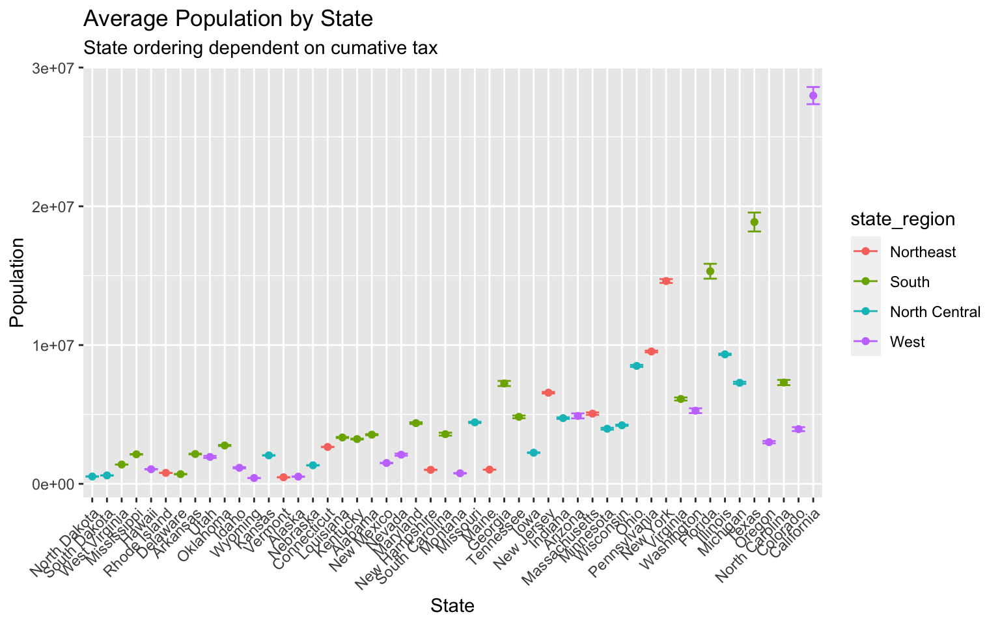
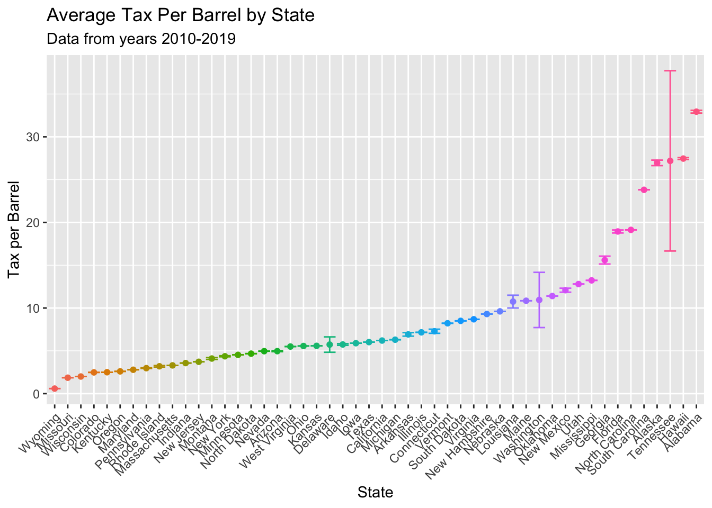

Taxation
Cumulative Taxs Collected
Looking at just the taxes collected by each state over the years. This tax is specifically looking at the “Beer removed for consumption or sale including beer removed tax determined for consumption or sale in a tavern or on brewery premises”. This data is coming from the Alcohol and Tobacco Tax and Trade Bureau dataset.
tax_df %>%
filter(state != "total") %>%
pivot_longer(
c(`2008`:`2019`),
names_to = "year",
values_to = "tax"
) %>%
filter(year > 2009) %>%
mutate(text_label = str_c("state: ", state)) %>% # creating text label
plot_ly(
x = ~year, y = ~tax, color = ~factor(state), text = ~text_label,
alpha = .5, type = "scatter", mode = "lines", colors = "viridis") %>%
layout( # adding a title
title = "Tax collected over the years by state")Analysis:
longer_tax_df = tax_df %>%
filter(state != "total") %>%
pivot_longer(
c(`2008`:`2019`),
names_to = "year",
values_to = "tax"
)
longer_tax_df %>%
filter(year > 2009) %>%
group_by(state) %>%
summarize(
mean_tax = mean(tax),
CI_lower = mean(tax) - 1.96 * sd(tax)/sqrt(length(tax)),
CI_upper = mean(tax) + 1.96 * sd(tax)/sqrt(length(tax))
) %>%
mutate(
state = abbr2state(state),
state = fct_reorder(state, mean_tax)) %>%
ggplot(aes(x = state, y = mean_tax, color=state)) +
geom_point() +
geom_errorbar(aes(ymin = CI_lower, ymax = CI_upper)) +
theme(axis.text.x = element_text(angle = 45, hjust = 1)) +
theme(legend.position = "none") +
labs(
title = "Average Tax Revenue by State",
subtitle = "Data from years 2010-2019",
y = "Tax Revenue",
x = "State"
)
Analysis:
Tax per Barrel
In the American Beer Distributers dataset specifically about taxation the document reports the Effective Excise Tax (Volume Adjusted), and the Effective Excise Tax with Other and Local Taxes.
The graphic below shows the Effective Excise Tax (Volume Adjusted).
sm3 = state_tax_df %>% filter(state != "District of Columbia")
static_plot<-ggplot(sm3,aes(rank_3,group=state,fill=as.factor(state),color=as.factor(state))) +
geom_tile(aes(y = adjusted/2,height = adjusted, width = 0.9), alpha = 0.8, color = NA) +
geom_text(aes(y = 0, label = paste(state, ' ')), vjust = 0.2, hjust = 1, size = 3.5) +
geom_text(aes(y = adjusted, label = paste(' ',adjusted)), hjust=0, size = 3.5) +
coord_flip(clip = 'off', expand = TRUE) +
scale_y_continuous(labels = scales::comma) +
scale_x_reverse() +
guides(color = FALSE, fill = FALSE) +
theme_minimal() +
theme(
plot.title=element_text(size=20, hjust=0.5, face='bold', colour='grey', vjust=-1),
plot.subtitle=element_text(size=10, hjust=0.5, face='italic', color='grey'),
plot.caption =element_text(size=1, hjust=0.5, face='italic', color='grey'),
axis.ticks.y = element_blank(),
axis.text.y = element_blank(),
plot.margin = margin(1,1,1,4, 'cm')
)
plt<-static_plot + transition_states(states = year, transition_length = 4, state_length = 1) +
ease_aes('cubic-in-out') +
labs(title = 'Tax per Barrel in Year : {closest_state}',
subtitle = 'Effective Excise Tax (Volume Adjusted)',
x = '',
y = 'Tax per Barrel')
plt
Analysis:
We can see Tennessee starting very low on the list and climbing up the ranks as the years increase.
Line Graph
# state_tax_df %>%
# filter(year > 2009) %>%
# mutate(text_label = str_c("state: ", state)) %>% # creating text label
# plot_ly( #using plotly to plot he tmax and tmin
# x = ~year, y = ~adjusted, color = ~factor(state), text = ~text_label,
# alpha = .5, type = "scatter", mode = "lines", colors = "viridis") %>%
# layout( # adding a title
# title = "Effective Excise Tax (Volume Adjusted) (Tax per Barrel)")
state_tax_df %>%
filter(state != "District of Columbia") %>%
filter(year > 2009) %>%
group_by(state) %>%
mutate(
tax = adjusted
) %>%
summarize(
mean_tax = mean(tax),
CI_lower = mean(tax) - 1.96 * sd(tax)/sqrt(length(tax)),
CI_upper = mean(tax) + 1.96 * sd(tax)/sqrt(length(tax))
) %>%
mutate(
#state = abbr2state(state),
state = fct_reorder(state, mean_tax)) %>%
ggplot(aes(x = state, y = mean_tax, color=state)) +
geom_point() +
geom_errorbar(aes(ymin = CI_lower, ymax = CI_upper)) +
theme(axis.text.x = element_text(angle = 45, hjust = 1)) +
theme(legend.position = "none") +
labs(
title = "Average Tax Per Barrel by State",
subtitle = "Data from years 2010-2019",
y = "Tax per Barrel",
x = "State"
)## `summarise()` ungrouping output (override with `.groups` argument)
Analysis:
Wyoming has the lowest tax per barrel average while Alabama has the highest tax per barrel. The biggest ranges of values goes to Tennessee with Washington and Delaware also having a range of values. All the other of the states seem to have the same tax per barrel from 2010-2019.
A work by Amy Pitts, Ruiyang Li, Wenbo Fei, and Ziyi (Iris) Wang
Visualizations and analyses performed using R (v4.0.2) and RStudio (v1.3.1073).
© Copyright 2020 The Beer Project Team, All Rights Reserved | Powered by Github.io